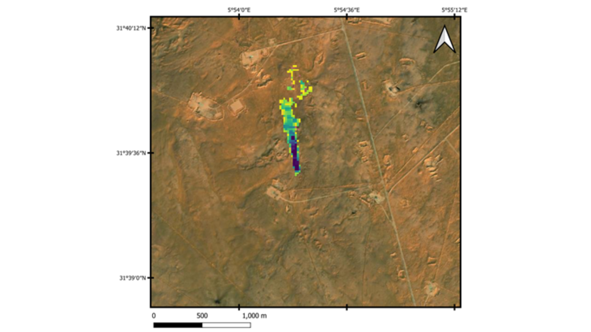

Emissions Monitoring Services

Global/County Emissions Reporting
Monthly historical natioal reporting of all GHG emissions to monitor global commitments for GHG reductions.

Urban/Localized Monitoring
Locally/Regionally track GHG emissions over cities, landfills, farms, industrial sites, and other landbased ghg emitters.

Offshore Emission Monitoring
Using multiple satellites, and new Glint mode techniques GHG measurements can be observed for offshore platforms. C-CORE also provides location services for active offshore platforms.